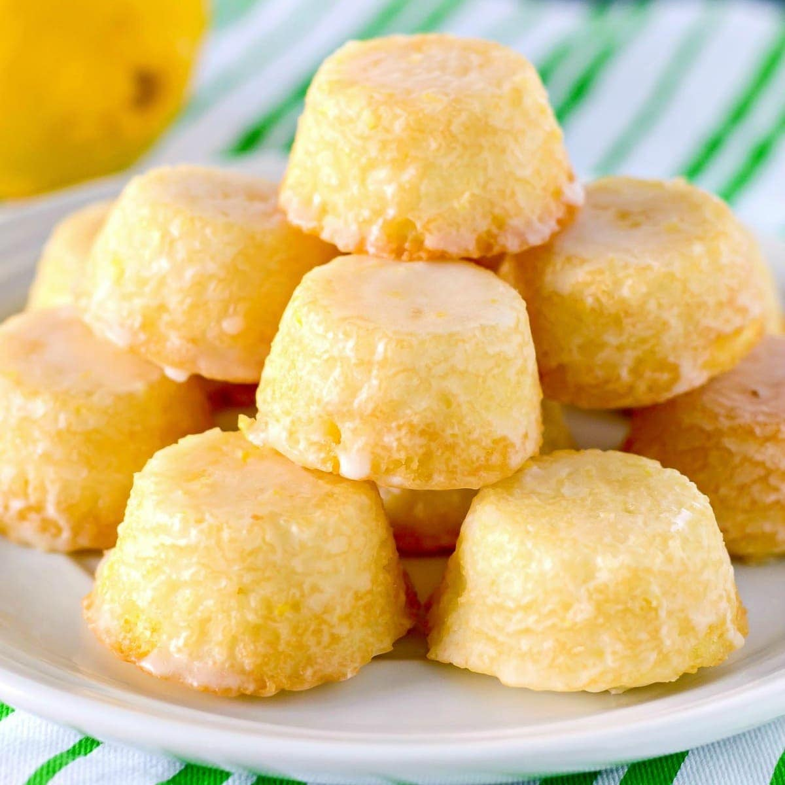

Odin Recipes
Lemon Cakes

Description
Mini Lemon Cakes (Makes 9 Individual Cakes)
Ingredients
- ½ cup (1 stick) unsalted butter, at room temperature
- 8½ ounces all-purpose flour (about 2 cups), plus more for dusting
- 1 teaspoon baking powder
- 1 teaspoon baking soda
- 1 teaspoon fine salt
- 1 cup sugar
- 3 large eggs
- 1 cup buttermilk
- Zest and juice of 2 lemons
Steps
- Preheat the oven to 350°F. Butter a 9x13-inch baking pan and dust it with flour, tapping out any excess.
- Line the bottom of the pan with parchment paper rounds cut to fit.
- In a medium bowl, whisk together the flour, baking powder, baking soda, and salt.
- In the bowl of a stand mixer fitted with the paddle attachment, cream together the butter and sugar on medium-high speed.
- With the mixer on medium-low speed, beat in 1 egg at a time.
- Increase the speed to medium and beat for 1 minute more, or until light and ribbony.
- Add the dry ingredients and mix on low speed until combined.
- Add the buttermilk, lemon zest, and lemon juice and beat on medium-high speed until the batter is light and fluffy.
- Pour the batter into the prepared pan and bake for 25 to 30 minutes, until a tester inserted into the cake comes out clean.
- Remove from the oven and let cool in the pan for 30 minutes.
- Invert the cake onto a wire rack, remove the parchment paper, and let cool for 30 more minutes.